28 Graphics for communication
28.1 Introduction
In exploratory data analysis, you learned how to use plots as tools for exploration. When you make exploratory plots, you know—even before looking—which variables the plot will display. You made each plot for a purpose, could quickly look at it, and then move on to the next plot. In the course of most analyses, you’ll produce tens or hundreds of plots, most of which are immediately thrown away.
Now that you understand your data, you need to communicate your understanding to others. Your audience will likely not share your background knowledge and will not be deeply invested in the data. To help others quickly build up a good mental model of the data, you will need to invest considerable effort in making your plots as self-explanatory as possible. In this chapter, you’ll learn some of the tools that Altair provides to do so.
This chapter focuses on the tools you need to create good graphics. I assume that you know what you want, and just need to know how to do it. For that reason, I highly recommend pairing this chapter with a good general visualisation book. I particularly like Good Charts, by Scott Berinato. It doesn’t teach the mechanics of creating visualisations, but instead focuses on what you need to think about in order to create effective graphics.
28.1.1 Prerequisites
In this chapter, we’ll focus once again on Altair. We’ll also use a little pandas for data manipulation, and a few Altair extension packages. Don’t forget you’ll need to install those packages with pip if you don’t already have them.
import altair as alt
import pandas as pd
import numpy as np
alt.data_transformers.enable('json')
#> DataTransformerRegistry.enable('json')
url_1 = "https://github.com/byuidatascience/data4python4ds/raw/master/data-raw/mpg/mpg.csv"
url_2 = "https://github.com/byuidatascience/data4python4ds/raw/master/data-raw/presidential/presidential.csv"
url_3 = "https://github.com/byuidatascience/data4python4ds/raw/master/data-raw/diamonds/diamonds.csv"
mpg = pd.read_csv(url_1)
presidential = pd.read_csv(url_2)
diamonds = pd.read_csv(url_3)
presidential = presidential.assign(
start = pd.to_datetime(presidential.start),
end = pd.to_datetime(presidential.end),
id = 33 + presidential.index
)28.2 Label
The easiest place to start when turning an exploratory graphic into an expository graphic is with good labels. You add labels with the title argument function. This example adds a plot title:
chart = (alt.Chart(mpg,
title = "Fuel efficiency generally decreases with engine size")
.encode(alt.X('displ'), alt.Y('hwy'), color = 'class')
.mark_circle())
chart.save("screenshots/altair_communicate_1.png")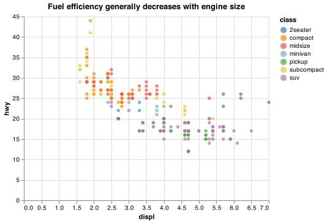
The purpose of a plot title is to summarise the main finding. Avoid titles that just describe what the plot is, e.g. “A scatterplot of engine displacement vs. fuel economy”.
If you need to add more text, you can use subtitles. They add additional detail in a smaller font beneath the title. Subtitles are not standardized or documented well in Altair (see the Subtitle Documentation and styling issue). The subtitles can be specified as shown below.
Notice the use of the .configure_<ELEMENT>() option that allows us to modify the fonts and location of the title in this example.
chart = (alt.Chart(mpg)
.encode(alt.X('displ'), alt.Y('hwy'),color = 'class')
.mark_circle()
.properties(
title = {
"text": "Fuel efficiency generally decreases with engine size",
"subtitle": "Two seaters (sports cars) are an exception because of their light weight"
})
.configure_title(
fontSize = 15,
anchor = "start",
subtitleFontSize = 11))
chart.save("screenshots/altair_communicate_2.png")
You can also use title to replace the axis and legend titles. It’s usually a good idea to replace short variable names with more detailed descriptions, and to include the units. Nextjournal provides detailed examples around editing Scales, Axes, and Legends.
chart = (alt.Chart(mpg)
.encode(
alt.X('displ', title = "Engine displacement (L)"),
alt.Y('hwy', title = "Highway fuel economy (mpg)"),
color = alt.Color('class', title = "Car type")
)
.mark_circle())
chart.save("screenshots/altair_communicate_3.png")
It is not possible to use mathematical equations instead of text strings in Altair.
28.2.1 Exercises
Create one plot on the fuel economy data with customised
title,subtitle,x,y, andcolourlabels.Take an exploratory graphic that you’ve created in the last month, and add informative titles to make it easier for others to understand.
28.3 Annotations
In addition to labelling major components of your plot, it’s often useful to label individual observations or groups of observations. The first tool you have at your disposal is mark_text(). mark_text() is similar to mark_circle(), but it has an additional encoding: text. This makes it possible to add textual labels to your chart.
There are two possible sources of labels. First, you might have a tibble that provides labels. The plot below isn’t terribly useful, but it illustrates a useful approach: pull out the most efficient car in each class with dplyr, and then label it on the plot:
best_in_class = (mpg
.assign(
hwy_min = lambda x: x.groupby('class').hwy.transform('max'))
.query('(hwy_min == hwy)')
.drop_duplicates('class', keep = 'first'))
base = (alt.Chart(mpg)
.encode(
alt.X('displ'),
alt.Y('hwy'),
alt.Color('class')
)
.mark_circle())
text = (alt.Chart(best_in_class)
.encode(
alt.X('displ'),
alt.Y('hwy'),
text = 'model'
)
.mark_text())
chart = base + text
chart.save("screenshots/altair_communicate_4.png")
This is hard to read because the labels overlap with each other, and with the points. We can make things a little better by formatting the text using additional arguments with mark_text(). We also use the dy parameter to move the labels slightly above the corresponding points:
text = (alt.Chart(best_in_class)
.encode(
alt.X('displ'),
alt.Y('hwy'),
text = 'model',
stroke = alt.value('black')
)
.mark_text(
align = 'left',
baseline = 'middle',
dy = -10))
highlight = (alt.Chart(best_in_class)
.encode(
alt.X('displ'),
alt.Y('hwy'),
color = alt.value("black")
)
.mark_point())
chart = highlight + base + text
chart.save("screenshots/altair_communicate_5.png")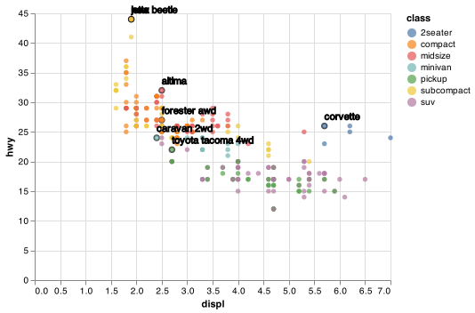
That helps a bit, but if you look closely in the top-left hand corner, you’ll notice that there are two labels practically on top of each other. This happens because the highway mileage and displacement for the best cars in the compact and subcompact categories are exactly the same. There’s no way that we can fix these by applying the same transformation for every label. Vega and Vega-Lite are in the process of adding support to handle the display of overlapping labels ref.
Note another handy technique used here: I added a second layer of large, hollow points to highlight the points that I’ve labeled.
Alternatively, you might just want to add a single label to the plot, but you’ll still need to create a data frame. Often, you want the label in the corner of the plot, so it’s convenient to create a new data frame using the maximum values of x and y.
label = pd.DataFrame({
'displ': [mpg.displ.max()],
'hwy': [mpg.hwy.max()],
'label': "Increasing engine size is related to decreasing fuel economy."})
text_corner = (alt.Chart(label)
.encode(
alt.X('displ'),
alt.Y('hwy'),
text = 'label'
)
.mark_text(align = 'right'))
chart = base + text_corner
chart.save("screenshots/altair_communicate_6.png")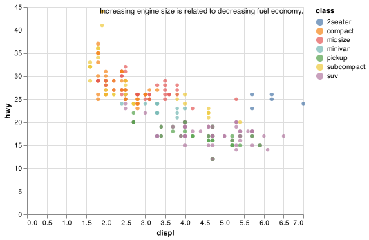
Remember, in addition to .mark_text(), you can use .mark_rule() in Altair to help annotate your plot. Use .mark_rule to add horizontal or vertical reference lines. I often make them thick (size = 2) and white (colour = white), and draw them underneath the primary data layer. That makes them easy to see, without drawing attention away from the data.
The only limit is your imagination (and your patience with positioning annotations to be aesthetically pleasing)!
28.3.1 Exercises
Use
.mark_text()with infinite positions to place text at the four corners of the plot.How do labels with
.mark_text()interact with faceting? How can you add a label to a single facet? How can you put a different label in each facet? (Hint: think about the underlying data.)
28.4 Scales
The third way you can make your plot better for communication is to adjust the scales. Scales control the mapping from data values to things that you can perceive. Normally, Altair automatically adds scales for you. For example, when you type:
(alt.Chart(mpg)
.encode(
alt.X('displ'),
alt.Y('hwy'),
alt.Color('class')
)
.mark_circle())Altair automatically adds default scales behind the scenes:
(alt.Chart(mpg)
.encode(
alt.X('displ', scale = alt.Scale(type = 'linear')),
alt.Y('hwy', scale = alt.Scale(type = 'linear')),
alt.Color('class', scale = alt.Scale(type = 'linear'))
)
.mark_circle())Note the naming scheme for scales: alt.Scale which is used with the scale argument in each of the encodings like alt.X() and alt.Y().
The default scales have been carefully chosen to do a good job for a wide range of inputs. Nevertheless, you might want to override the defaults for two reasons:
You might want to tweak some of the parameters of the default scale. This allows you to do things like change the breaks on the axes, or the key labels on the legend.
You might want to replace the scale altogether, and use a completely different algorithm. Often you can do better than the default because you know more about the data.
28.4.1 Axis ticks and legend keys
There are two primary arguments that affect the appearance of the ticks on the axes and the keys on the legend: values and labels within alt.Axis(). Values controls the position of the ticks, or the values associated with the keys. Labels controls whether the text label associated with each tick/key is displayed. The most common use of breaks is to override the default choice:
chart = (alt.Chart(mpg)
.encode(
alt.X('displ'),
alt.Y('hwy', axis = alt.Axis(
values = np.arange(15, 40, step = 5).tolist()),
scale = alt.Scale(zero = False )),
alt.Color('class'))
.mark_circle())
chart.save("screenshots/altair_communicate_7.png")
You can also set it to False to suppress the labels altogether. This is useful for maps, or for publishing plots where you can’t share the absolute numbers.
chart = (alt.Chart(mpg)
.encode(
alt.X('displ', axis = alt.Axis(labels = False)),
alt.Y('hwy', axis = alt.Axis(labels = False)),
alt.Color('class')
)
.mark_circle())
chart.save("screenshots/altair_communicate_8.png")
You can also use breaks and labels to control the appearance of legends. Collectively axes and legends are called guides. Axes are used for x and y aesthetics; legends are used for everything else.
Another use of breaks is when you have relatively few data points and want to highlight exactly where the observations occur. For example, take this plot that shows when each US president started and ended their term.
presidential_melt = presidential.melt(
['name', 'party', 'id'],
var_name = 'start_end',
value_name = 'date')
lines = (alt.Chart(presidential_melt)
.encode(
alt.X('date', axis = alt.Axis(labelOverlap=False)),
alt.Y('id', scale = alt.Scale(zero = False)),
detail = 'id'
)
.mark_line())
points = (alt.Chart(presidential)
.encode(
alt.X('start',
axis = alt.Axis(
values = presidential.start.to_list(),
format = "%y",
tickCount=0,
labelOverlap = False,
labelSeparation = -1),
title = None),
alt.Y('id', scale = alt.Scale(zero = False)),
)
.mark_circle())
chart = lines + points
chart.save("screenshots/altair_communicate_9.png")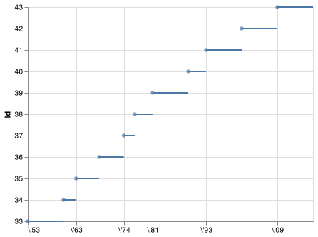
Note that the specification of breaks and labels for date and datetime scales is a little different.
28.4.2 Legend layout
You will most often use values and labels to tweak the axes. While they both also work for legends, there are a few other techniques you are more likely to use.
To control the overall position of the legend, you need to use configure_legend(). The argument orient controls where the legend is drawn:
base = (alt.Chart(mpg)
.encode(
alt.X("displ"),
alt.Y("hwy"),
alt.Color("class")
)
.mark_circle())
ch1 = base.configure_legend(orient = 'left')
ch2 = base.configure_legend(orient = 'top')
ch3 = base.configure_legend(orient = 'bottom')
ch4 = base.configure_legend(orient = 'right')
ch1.save("screenshots/altair_communicate_legend1.png")
ch2.save("screenshots/altair_communicate_legend2.png")
ch3.save("screenshots/altair_communicate_legend3.png")
ch4.save("screenshots/altair_communicate_legend4.png")


There are options for putting the legend within the chart using `top-right’, ‘top-left’, ‘bottom-right’, and ‘bottom-left’.
To control the display of individual legends, use or set legend = None in alt.Color() or alt.Size(). The following example shows how to control the number of columns the legend uses with columns.
chart = base.configure_legend(orient = 'bottom', columns = 3)
chart.save("screenshots/altair_communicate_10.png")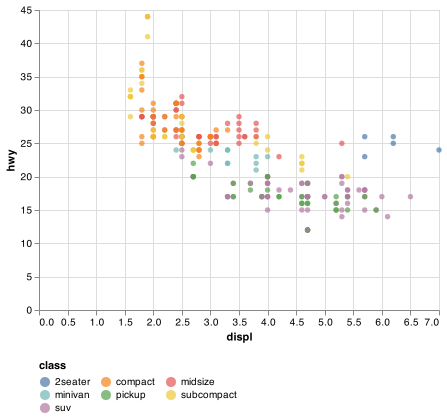
28.4.3 Replacing a scale
Instead of just tweaking the details a little, you can instead replace the scale altogether. There are two types of scales you’re mostly likely to want to switch out: continuous position scales and colour scales. Fortunately, the same principles apply to all the other aesthetics, so once you’ve mastered position and colour, you’ll be able to quickly pick up other scale replacements.
It’s very useful to plot transformations of your variable. For example, as we’ve seen in diamond prices it’s easier to see the precise relationship between carat and price if we log transform them:
diamonds_log10 = diamonds.assign(
carat_log = np.log10(diamonds.carat),
price_log = np.log10(diamonds.price)
)
chart1 = (alt.Chart(diamonds_log10)
.encode(
alt.X('carat'),
alt.Y('price')
)
.mark_circle())
chart2 = (alt.Chart(diamonds_log10)
.encode(
alt.X('carat_log', scale = alt.Scale(zero = False)),
alt.Y('price_log', scale = alt.Scale(zero = False))
)
.mark_circle())
chart1.save("screenshots/altair_communicate_11a.png")
chart2.save("screenshots/altair_communicate_11b.png") 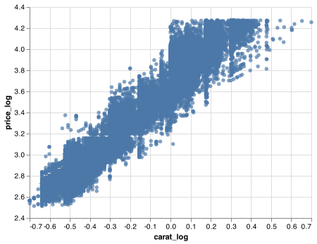
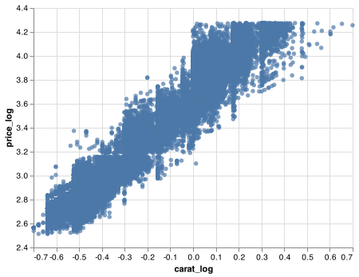
However, the disadvantage of this transformation is that the axes are now labelled with the transformed values, making it hard to interpret the plot. Instead of doing the transformation in the aesthetic mapping, we can instead do it with the scale. This is visually identical, except the axes are labelled on the original data scale.
chart = (alt.Chart(diamonds)
.encode(
alt.X('carat', scale = alt.Scale(type = 'log')),
alt.Y('price', scale = alt.Scale(type = 'log'))
)
.mark_circle())
chart.save("screenshots/altair_communicate_12.png")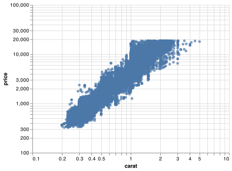
Another scale that is frequently customised is colour. The default categorical scale picks colours that are evenly spaced around the colour wheel. Useful alternatives are the ColorBrewer scales which have been hand tuned to work better for people with common types of colour blindness. The two plots below look similar, but there is enough difference in the shades of red and green that the dots on the right can be distinguished even by people with red-green colour blindness. Vega provides access to different named color schemes used in visualization: https://vega.github.io/vega/docs/schemes/.
chart_default = (alt.Chart(mpg)
.encode(
alt.X('displ'),
alt.Y('hwy'),
alt.Color('drv')
)
.mark_circle())
chart_cb = (alt.Chart(mpg)
.encode(
alt.X('displ'),
alt.Y('hwy'),
alt.Color('drv', scale = alt.Scale(scheme = 'set1'))
)
.mark_circle())
chart_default.save("screenshots/altair_communicate_13a.png")
chart_cb.save("screenshots/altair_communicate_13b.png") 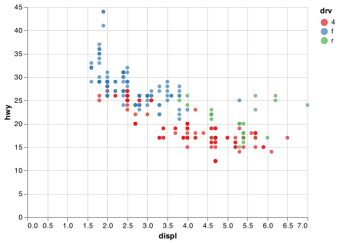
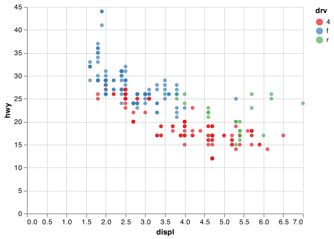
Don’t forget simpler techniques. If there are just a few colours, you can add a redundant shape mapping. This will also help ensure your plot is interpretable in black and white.
Note: mark_circle() does not take a shape encoding. mark_point() uses the shape encoding.
chart = (alt.Chart(mpg)
.encode(
alt.X('displ'),
alt.Y('hwy'),
color = alt.Color('drv', scale = alt.Scale(scheme = 'set1')),
shape = alt.Shape('drv:N')
)
.mark_point(filled = True))
chart.save("screenshots/altair_communicate_14.png")
When you have a predefined mapping between values and colours, use domain and range in the color scale. For example, if we map presidential party to colour, we want to use the standard mapping of red for Republicans and blue for Democrats:
lines = (alt.Chart(presidential_melt)
.encode(
alt.X('date', axis = alt.Axis(labelOverlap=False)),
alt.Y('id', scale = alt.Scale(zero = False)),
detail = 'id',
color = alt.Color('party',
scale = alt.Scale(
domain = ['Republican', 'Democratic'],
range = ['red', 'blue'])
)
)
.mark_line())
points = (alt.Chart(presidential)
.encode(
alt.X('start'),
alt.Y('id', scale = alt.Scale(zero = False)),
color = alt.Color('party',
scale = alt.Scale(
domain = ['Republican', 'Democratic'],
range = ['red', 'blue'])
)
)
.mark_circle())
chart = lines + points
chart.save("screenshots/altair_communicate_15.png")
For continuous colour, you can use the built-in sequential color schemes. Diverging colour schemes allow you to give, for example, positive and negative values different colours. That’s sometimes also useful if you want to distinguish points above or below the mean.
Another option uses sequential multi-hue schemes The viridis schemes are a continuous analog of the categorical ColorBrewer scales. The designers, Nathaniel Smith and Stéfan van der Walt, carefully tailored a continuous colour scheme that has good perceptual properties. Here’s an example from the viridis vignette.
df = pd.DataFrame({
'x': np.random.normal(0, 1, 10000),
'y': np.random.normal(0, 1, 10000)})
chart1 = (alt.Chart(df)
.encode(
alt.X('x', bin = alt.Bin(extent=[-4, 4], step=0.25)),
alt.Y('y', bin = alt.Bin(extent=[-4, 4], step=0.25)),
color = alt.Color('count()'),
size = alt.value(75)
)
.mark_square())
chart2 = (alt.Chart(df)
.encode(
alt.X('x', bin = alt.Bin(extent=[-4, 4], step=0.25)),
alt.Y('y', bin = alt.Bin(extent=[-4, 4], step=0.25)),
color = alt.Color('count()', scale = alt.Scale(scheme = 'viridis')),
size = alt.value(75)
)
.mark_square())
chart1.save("screenshots/altair_communicate_16a.png")
chart2.save("screenshots/altair_communicate_16b.png")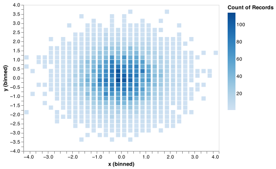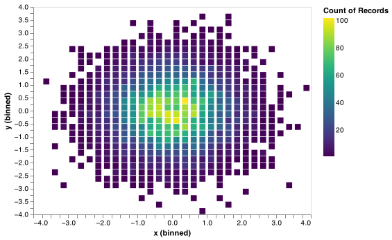
28.4.4 Exercises
Change the display of the presidential terms by:
- Combining the two variants shown above.
- Improving the display of the y axis.
- Labelling each term with the name of the president.
- Adding informative plot labels.
- Placing breaks every 4 years (this is trickier than it seems!).
28.5 Zooming
There are two ways to control the plot limits:
- Adjusting what data are plotted
- Setting the limits in each scale
To zoom in on a region of the plot:
chart1 = (alt.Chart(mpg)
.encode(
alt.X('displ', scale = alt.Scale(domain = (5, 7))),
alt.Y('hwy', scale = alt.Scale(domain = (10, 30))),
alt.Color('drv')
)
.mark_circle())
chart2 = (alt.Chart(mpg)
.encode(
alt.X('displ', scale = alt.Scale(domain = (5, 7))),
alt.Y('hwy', scale = alt.Scale(domain = (10, 30))),
alt.Color('drv')
)
.mark_circle(clip = True))
chart1.save("screenshots/altair_communicate_17a.png")
chart2.save("screenshots/altair_communicate_17b.png") 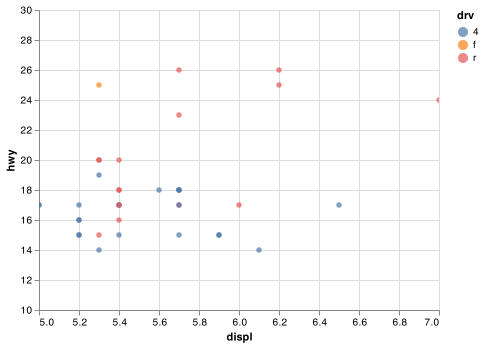
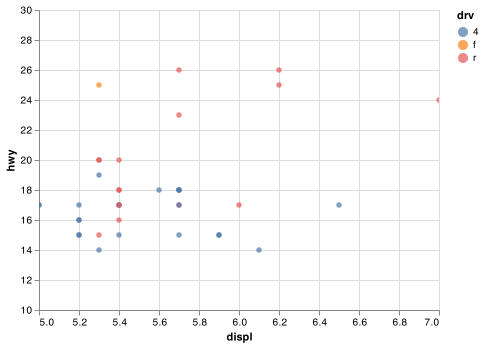
You can also set the limits on individual scales. Reducing the limits is basically equivalent to subsetting the data. It is generally more useful if you want expand the limits, for example, to match scales across different plots. For example, if we extract two classes of cars and plot them separately, it’s difficult to compare the plots because all three scales (the x-axis, the y-axis, and the colour aesthetic) have different ranges.
Note: Certain column names can’t be used in query() as they are reserved words in Python. class is one of those words. Maybe I can save you 30 minutes of searching to figure this out.
suv = mpg.rename(columns = {"class":"class1"}).query('class1 == "suv"')
compact = mpg.rename(columns = {"class":"class1"}).query('class1 == "compact"')
chart1 = (alt.Chart(suv)
.encode(
alt.X('displ', scale = alt.Scale(zero = False)),
alt.Y('hwy', scale = alt.Scale(zero = False)),
alt.Color('drv')
)
.mark_circle())
chart2 = (alt.Chart(compact)
.encode(
alt.X('displ', scale = alt.Scale(zero = False)),
alt.Y('hwy', scale = alt.Scale(zero = False)),
alt.Color('drv')
)
.mark_circle())
chart1.save("screenshots/altair_communicate_18a.png")
chart2.save("screenshots/altair_communicate_18b.png") 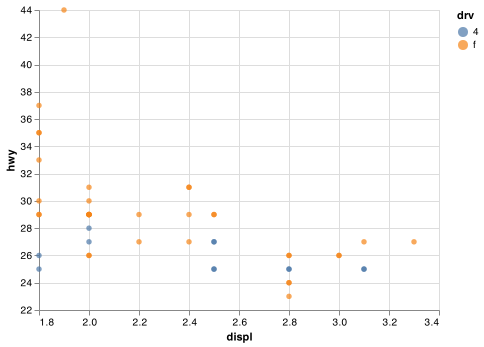
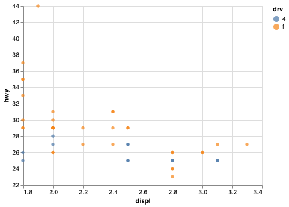
One way to overcome this problem is to share scales across multiple plots using .resolve_scale().
suv_chart = (alt.Chart(suv)
.encode(
alt.X('displ', scale = alt.Scale(zero = False)),
alt.Y('hwy', scale = alt.Scale(zero = False)),
alt.Color('drv')
)
.mark_circle())
compact_chart = (alt.Chart(compact)
.encode(
alt.X('displ', scale = alt.Scale(zero = False)),
alt.Y('hwy', scale = alt.Scale(zero = False)),
alt.Color('drv')
)
.mark_circle())
chart = alt.hconcat(
suv_chart,
compact_chart
).resolve_scale(y = 'shared', x = 'shared', color = 'shared')
chart.save("screenshots/altair_communicate_19.png")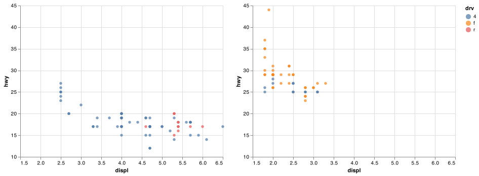
28.6 Themes
Finally, you can customise the non-data elements of your plot with a theme:
alt.themes.enable('ggplot2')
#> ThemeRegistry.enable('ggplot2')
chart = alt.hconcat(
suv_chart,
compact_chart
).resolve_scale(y = 'shared', x = 'shared', color = 'shared')
chart.save("screenshots/altair_communicate_20.png")
Vega currently includes some themes which altair can access with themes.enable(), as shown in Figure 28.1.
Figure 28.1: The eight themes built-in to ggplot2.
It’s also possible to control individual components of each theme, like the size and colour of the font used for the y axis. Unfortunately, this level of detail is outside the scope of this book. I recommend Sergio Sanchez’s ‘Consistently Beautiful Visualizations with Altair Themes’ Medium article for details. You can also create your own themes, if you are trying to match a particular corporate or journal style.
28.7 Saving your plots
To get your plots out of Python and into your final write-up use <CHART>.save() to save the chart to disk:
(alt.Chart(df)
.encode(
alt.X('letter'),
alt.Y('count'),
color = alt.value('black')
)
.mark_bar()
.properties(width = 425, height = 400)
.save('my-plot.html'))You can save an Altair chart object as a PNG, SVG, or PDF image. You will need additional extensions to run the javascript code necessary to interpret the Vega-Lite specification and output it in the form of an image. Altair can do this via the altair_saver package. You will need to use pip install altair_saver to install the package.
(alt.Chart(df)
.encode(
alt.X('letter'),
alt.Y('count'),
color = alt.value('black')
)
.mark_bar()
.properties(width = 425, height = 400)
.save('my-plot.png'))28.8 Learning more
The absolute best place to learn more is the Altair guide. It goes into much more depth about the underlying theory, and has many more examples of how to combine the individual pieces to solve practical problems.
Another great resource is the Altair ecosystem. This site lists many of the packages that extend Altair. It’s a great place to start if you’re trying to do something that seems hard with Altair.